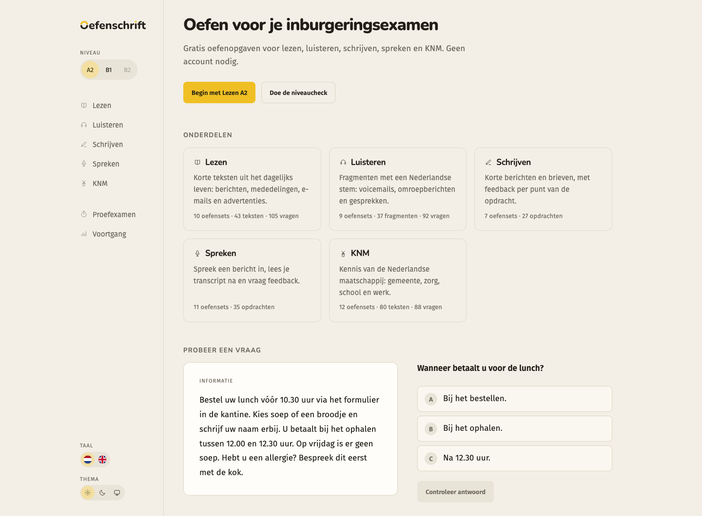
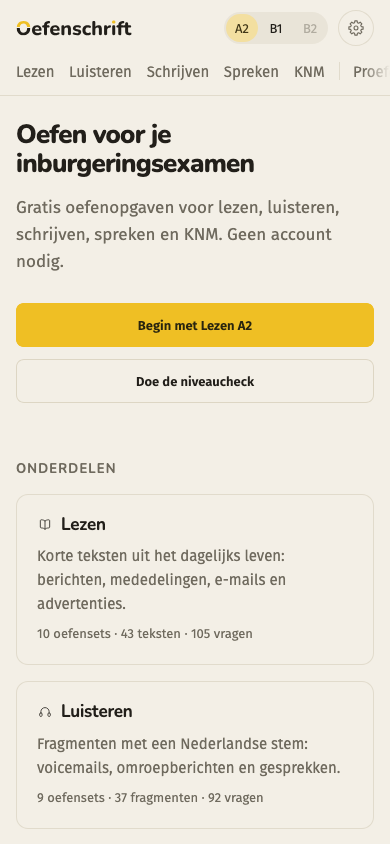

Give the home page a focal point
The current cards have similar weight and a lot of descriptive text. Pair the first action with a real sample, then give each subject a shorter, more distinct entry.
September 2026 · Local concepts
Eight home-page directions for the app, with an interactive exercise workspace to explore the components.


Interactive mockups
Uses existing exercises. Recording and feedback are simulated; audio playback is real. Answers stay in this preview.
What I would change
The current cards have similar weight and a lot of descriptive text. Pair the first action with a real sample, then give each subject a shorter, more distinct entry.
The app already remembers unfinished sets. Quiet green gives that continuation more presence. Show progress only when the learner has made some.
Let learners fill a sentence gap in context. Give form tasks separate fields. A writing task can still use a generous single answer area.
Reading evidence stays beside the question. Listening transcripts open after the questions for that clip. Speaking keeps one editable transcript. Missing details get a concrete next action.
The images explore appearance and may contain small generated-text errors. The component preview uses exact catalogue text. These are local proposals; the application and reviewed exercise catalogue have not been changed. Palette changes do not reproduce every layout detail in the images.